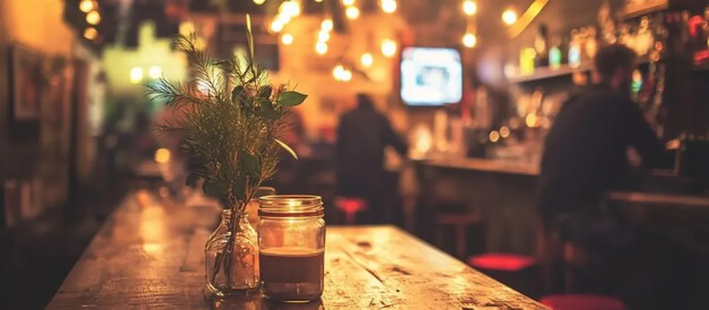
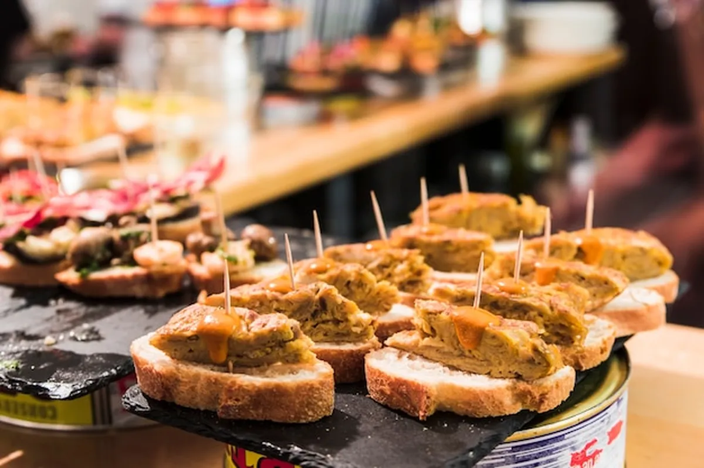
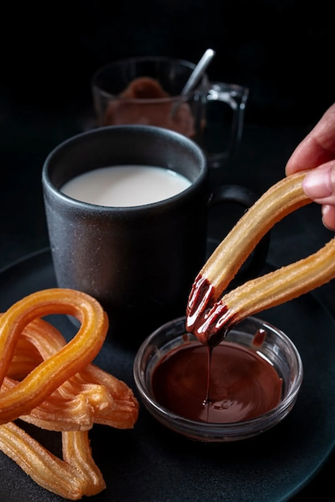
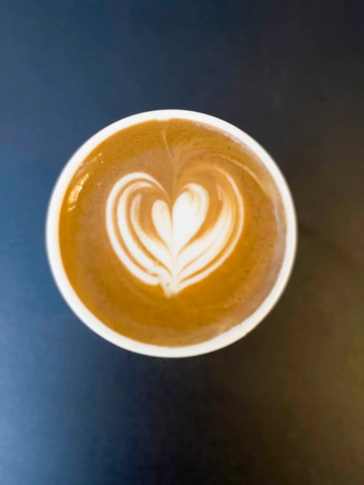

Cocina de toda la vida, pinchos variados y menú del día en la calle más animada de Santander. Trato familiar y producto de calidad.
La Mulata es un restaurante con carácter propio en una de las calles más emblemáticas de Santander. Aquí la cocina se hace como siempre: con producto fresco, recetas de toda la vida y ese toque casero que solo se consigue con dedicación.
Perfecto para un menú del día contundente, unos pinchos después del trabajo o una cena tranquila con amigos. El ambiente es cercano, el trato es familiar y las raciones son generosas.


Variedad diaria en barra: croquetas caseras, tortilla, boquerones y mucho más. El pincho perfecto te espera.

Platos de cuchara, guisos tradicionales y recetas cántabras. Como comer en casa, pero sin fregar.

Primer plato, segundo, postre y bebida. Calidad y cantidad a precio justo. Cambia cada día.
| Lunes | 12:00 – 16:00 · 20:00 – 23:00 |
| Martes | 12:00 – 16:00 · 20:00 – 23:00 |
| Miércoles | 12:00 – 16:00 · 20:00 – 23:00 |
| Jueves | 12:00 – 16:00 · 20:00 – 23:00 |
| Viernes | 12:00 – 16:00 · 20:00 – 23:30 |
| Sábado | 12:00 – 16:00 · 20:00 – 23:30 |
| Domingo | 12:00 – 16:00 |
Estamos en la calle más animada de Santander, rodeados de los mejores bares de pinchos de la ciudad. Fácil acceso a pie desde cualquier punto del centro.
📞 942 36 37 85 — LlámanosCalle Tetuán, s/n
39004 Santander, Cantabria
Económico · €
Menú del día a buen precio
En La Mulata te esperamos con cocina de verdad, producto fresco y el mejor trato. Calle Tetuán, Santander.